|
Fractal Clouds
1.0
Fractal cloud generator
|
|
Fractal Clouds
1.0
Fractal cloud generator
|
This code generates a log-normal random density field  with a power spectrum 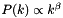, with 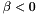, with a specified index , and specified one-point statistics (i.e. mean
with a power spectrum 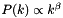, with 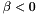, with a specified index , and specified one-point statistics (i.e. mean  and variance
and variance  ).
).  is the Fourier transform of . It is an implementation of the algorithm by Lewis & Austin (2002), with some modifications (see below). This algorithm has been successfully used by, e.g., Sutherland & Bicknell (2003), Sutherland & Bicknell (2007) to generate fractal gas clouds such as the one used by Bland-Hawthorn et al. (2007), Cooper et al. (2008) and Tepper-Garcia et al. (2015a). The code is for now only available in serial.
is the Fourier transform of . It is an implementation of the algorithm by Lewis & Austin (2002), with some modifications (see below). This algorithm has been successfully used by, e.g., Sutherland & Bicknell (2003), Sutherland & Bicknell (2007) to generate fractal gas clouds such as the one used by Bland-Hawthorn et al. (2007), Cooper et al. (2008) and Tepper-Garcia et al. (2015a). The code is for now only available in serial.
Modifications
 can be enforced, such that only modes with
can be enforced, such that only modes with  are allowed, thus limiting the typical, maximum (linear) size of the cloudlets relative to the grid (if the linear dimension of grid is 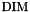, the minium scales will be 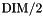, and the largest cloudlets will be of order 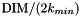).
are allowed, thus limiting the typical, maximum (linear) size of the cloudlets relative to the grid (if the linear dimension of grid is 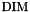, the minium scales will be 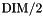, and the largest cloudlets will be of order 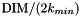).Accompanying software
plotField.gp: An editable gnuplot script to visualise the result. Edits include setting the dimensionality of the problem, and the field to visualise. Requires gnuplot 4.6 or higher. The output consists on a comparison of the final Gaussian and log-normal power spectra; a visualisation of the the Gaussian or log-normal (by choice of user) random field at convergence; and the probability distribution of the Gaussian or log-normal (by choice of user) density together with a Gaussian fit. Note that the later corresponds to the actual density for the Gaussian field, and to the logarithm of the density for the log-normal field. The visualisation of the random field at convergence in the 3D case corresponds to a series of x-slices through the volume.
Code verification
We verify our code in two ways: 1) By running a simulation with the same parameters as the one presented in Lewis & Austin (2002)'s article and comparing (albeit only visually) to their results. 2) By running a 3D simulation with specified target log-normal statistics ( 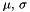) and assessing the results.
Comparison to Lewis & Austin (2002)
A sample output of a 2D simulation (N = 512) of a log-normal random field with 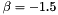, generated from a Gaussian random field with mean and variance 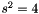 is shown below (Figure 1). The corresponding mean  and standard deviation
and standard deviation  of the log-normal field for this particular realisation are indicated on the plot (See Sutherland & Bicknell 2007 ; their appendix B for the relation between
of the log-normal field for this particular realisation are indicated on the plot (See Sutherland & Bicknell 2007 ; their appendix B for the relation between  ,
,  , and ). Note that the relatively modest Gaussian parameters translate into quite high log-normal parameters. Such high values may negatively affect the accuracy of the method.
, and ). Note that the relatively modest Gaussian parameters translate into quite high log-normal parameters. Such high values may negatively affect the accuracy of the method.
Note that this simulation has been run with the settings (see the corresponding source file for more information):
#define FLOAT 0
#define DOUBLE 1
#define MAX_ITER 15
#define BINARYOUT 1
#define RANDOM 0
#define NYQUIST 0
#define BETA (-1.5)
#define KMIN 1
#define SIG2_GAUSS 4.
#define MU_GAUSS 0.
#define SIM2D 2
#define DIM (512)
#define SGFILTER 0
#define POLYFIT 1
#define POLYDEG 3
In particular, the choice of RANDOM set to 0 allows the simulation to be reproduced exactly.
A full, 3D simulation
Below, a sample output of a more realistic, 3D simulation following Sutherland & Bicknell (2007). In brief, a log-normal (fractal) distribution with  and
and  (corresponding to 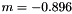 and 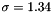), and a power-spectrum index
(corresponding to 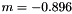 and 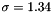), and a power-spectrum index  is generated over a 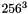 cube, allowing only modes with 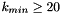. The fact that the distribution of the logarithm of the density is nearly exactly Gaussian with parameters close to their target counterparts (see left panel of Figure 2) is reassuring. The power spectrum slope differs only marginally from its target value. And, as can be appreciated from Figure 3 below, the typical size of the largest cloudlets is indeed of the order of
is generated over a 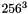 cube, allowing only modes with 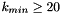. The fact that the distribution of the logarithm of the density is nearly exactly Gaussian with parameters close to their target counterparts (see left panel of Figure 2) is reassuring. The power spectrum slope differs only marginally from its target value. And, as can be appreciated from Figure 3 below, the typical size of the largest cloudlets is indeed of the order of  .
.
Note that this simulation has been run with the settings:
#define FLOAT 0
#define DOUBLE 1
#define MAX_ITER 15
#define BINARYOUT 1
#define RANDOM 0
#define NYQUIST 0
#define BETA (-5./3.)
#define KMIN 20
#define SIG2_GAUSS 0.
#define SIG2_LOGN 5.
#define MU_LOGN 0.
#define SIM2D 3
#define DIM (256)
#define SGFILTER 1
#define SGORDER 1
#define HALFWINDOW 2
Note that setting SIG2_GAUSS = 0. is important, as otherwise the value of SIG2_LOGN and MU_LOGN would be ignored.
References
 1.8.10
1.8.10